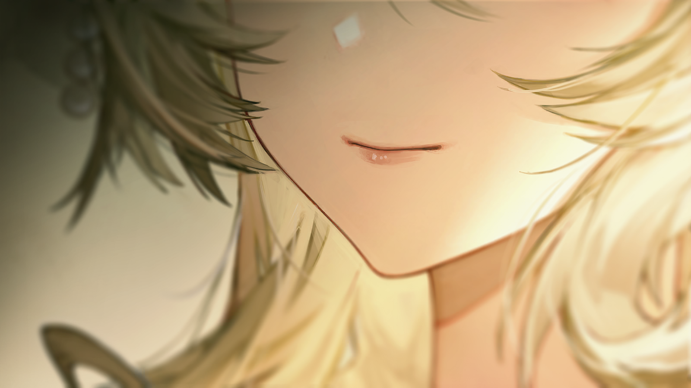
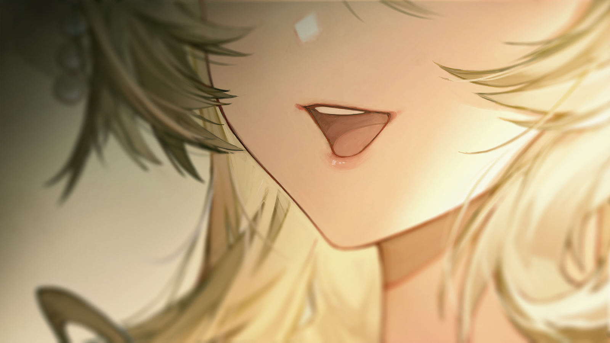
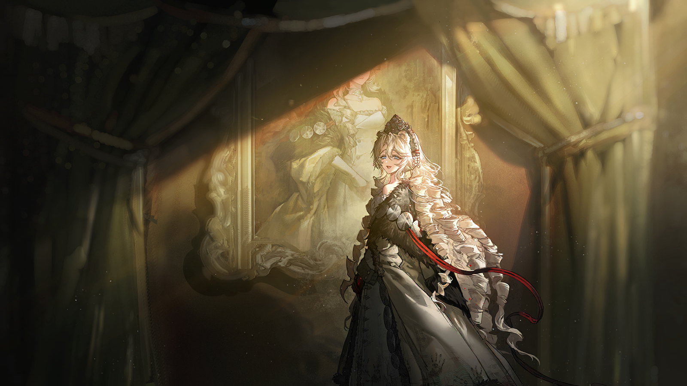
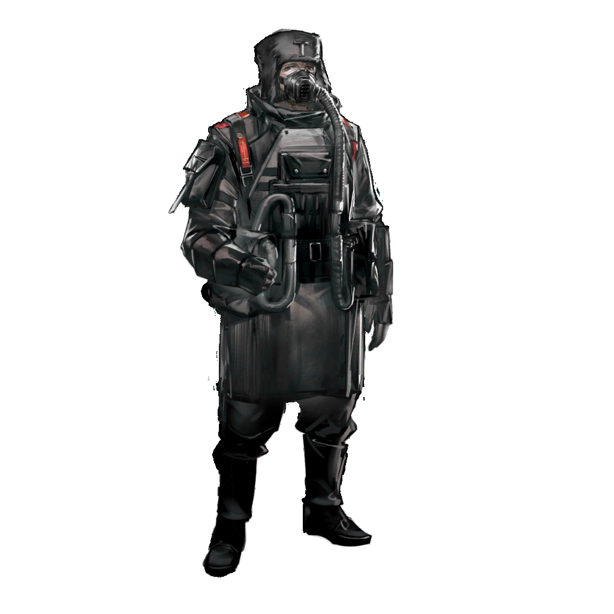
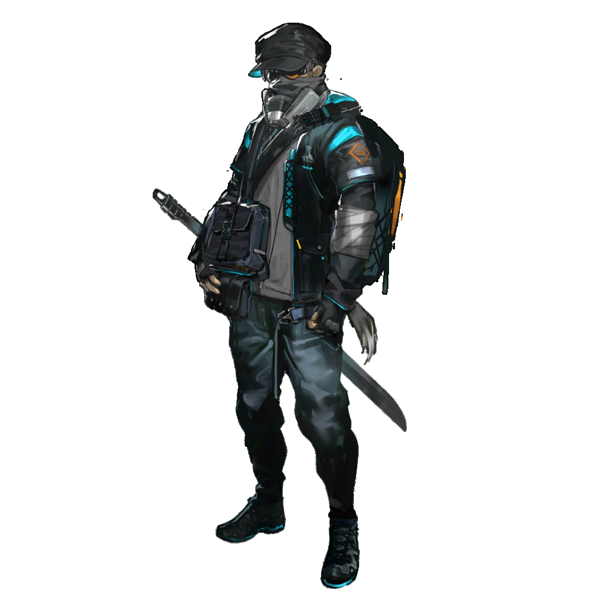

从上层甲板的最前方往外望去，划定了帝国都城的高大城墙已经在眼前一览无余。
而两支集团军还徘徊在原地，与两只在荒野上相中同一猎物的饿兽别无二致。
猎物虽已僵死，身躯却仍然庞大。钢铁的丛林将它围绕，也将它遮盖，在探明情况之前，无人敢于率先动手。

叶甫根尼
……

军官
总司令，信使带回了女大公殿下的回信。
军官
“她会妥善安排军队的补给事宜，但是在城中局势完全稳定之前，她请您与您的军队少安勿躁，等待乌萨斯召唤你们的时机。”

叶甫根尼
又是这套说辞。
军官
圣骏堡如今全城戒严，我们的信使行动也受到限制，无法获取更多情报。
叶甫根尼
现在负责城中治安的，是首都卫戍军团？
军官
不……是“特辖局”。

叶甫根尼
……什么？
军官
“特别管辖事务总局”，就是那位皇女改组第三局之后新设立的机构。从职能上说，它几乎可以合法插手城中一应机关的所有事务。
叶甫根尼
哼。我以为沃尔金娜公爵带着手上的首都卫戍军团主动投诚，至少能为自己争取来一点掌控局面的权力。
叶甫根尼
又或者是……叶莉萨维塔当真有异于常人的手段？我的父亲还真是挑选了一位优秀的合作伙伴。
叶甫根尼
第二集团军那边？
军官
与我们的状况别无二致，女大公殿下同样没有答应他们的入城请求。
军官
不过，中央集团军“撤退”后，我们的前锋营已经从涅瓦湖东岸移动到西岸驻扎，沿路铺设了防线，第二集团军方面并未发起抗议。
军官
从地理位置上来说，他们并不比我们占有更多先机。

叶甫根尼
不是第二集团军没有发起抗议，是我们先抓住了他们越界的侦察队，致使他们不能发起抗议。
叶甫根尼
现在还不到撕破脸的时候。
军官
……是，抱歉，长官。下次我会更注意措辞。
军官
那我们还需要往城中增派人手吗？
叶甫根尼
不。
叶甫根尼
就按叶莉萨维塔所说的，我们再等等。
军官
如果您能给出更明确的指令——

叶甫根尼
我们只能等。等一个机会。
叶甫根尼
现在所有人的筹码都已经亮出来了，这是比拼耐心的时候。
叶甫根尼
最沉不住气的那个，一定会最先被赶下桌。
冷风从灰白色的街上吹过，只卷起一些无人清扫的残雪。

饥饿的乞丐
行行好吧，老爷。
饥饿的乞丐
我实在是饿极了，就赏我一点吃的吧……我快要死啦！
摊贩
滚开！别死在我货物边上！
饥饿的乞丐
求求您了，我也不想死在这儿的，只要给我半块面包就能打发我了呀。
摊贩
你以为现在面包是什么便宜货吗？
饥饿的乞丐
这里不是特维尔公爵的地界吗，半个圣骏堡的粮食都归他管，那可是顶阔绰的老爷。
饥饿的乞丐
多难得啊，今天没有放烈循兽来咬我，我还以为能从垃圾桶里捡到点吃的，可是，唉……
饥饿的乞丐
这个冬天到底是怎么了？伟大的圣骏堡连我这样一只鼷兽都容不下啦！
摊贩
够了……快闭嘴吧！！
抱怨声未落，他们看到了几个穿着黑色衣服的人从大街正中央走了过去。像是黑色的羽兽悄声划过天空，天空是那样地灰白。
议论的人们纷纷噤声，不知自己是否会因言获罪。而那些人对杂乱的人群视若无睹，走入了路旁一栋豪华的府邸里。
血。
不一会，鲜红的血从那扇华丽的大门后流了出来，漫过洁白的石阶，淌到了结霜的道路上。
很快，血也变得如同天空一样灰白。

年长的女仆
……紫杉小径……

年轻的女仆
——是的，是的。
年轻的女仆
绿雕林地，紫杉小径，通通都按您说的修剪过了。您还要吹毛求疵到什么程度呢，女士？
年轻的女仆
我们谁也没有见过琥珀宫当年的模样，又怎么能复原出“一模一样”的琥珀宫呢？

年长的女仆
它还存在，存在于我的脑海里，我是在帮助你们将它复现出来。
年长的女仆
这是那位殿下的旨意，你们知道的，敢于违抗她的人会是什么下场。

叶莉莎女大公
阿格拉娅夫人，您这是……？

年长的女仆
叶莉萨维塔殿下。请别担心，只是一些对新人的常规教导。

叶莉莎女大公
原来如此。不过，我已经说过许多次了，请叫我叶莉莎吧。

年长的女仆
那么，除非您也只称我为葛莱沙。
叶莉莎女大公
哈哈……看来即使过了这么多年，我们也还是难以在称呼上达成一致。
年长的女仆
不，殿下，您多虑了。我只是认为这世间的人们，都还是各司其职的好。在这里，您是女大公殿下，而我只是一名女仆长。
叶莉莎女大公
希望宫中的这些事务都还顺利。

年长的女仆
……纳斯塔霞殿下要我们把这琥珀宫中的一草一木，一砖一瓦，全部还原成曾经的模样。
年长的女仆
您该理解的……这实在是有些困难。

叶莉莎女大公
我明白……她虽然长大了，但也怀念着过去那段和父母手足一同生活、嬉戏的时光。
叶莉莎女大公
依照她的吩咐做吧，如果只是这样一个小小的心愿……也没有违逆的必要，不是吗？
叶莉莎女大公
毕竟，她很久没有回到这里了。
年长的女仆
是的……我们不会违逆她。
年长的女仆
还站在这里的人，没有人会违逆她……
“可是当年琥珀宫种植的那种紫杉已经绝迹了。”
叶莉萨维塔一眼看出了园丁们努力的徒劳，可她什么也没说。
她熟练地穿过花园迷宫，走出紫杉环绕的小路，又走上大厅中央的阶梯，踏入通往画像厅的长廊。
身边，佣人来来往往，脸上都挂着相似的、麻木的神情。
他们机械地擦洗着室内的地毯、室外的石板……似乎是要把曾沾染在上面的所有血迹都彻底洗去。
可这在不断有新的脏污产生的当下，是不可能做到的。
叶莉莎女大公
……
在抵达画像厅，推开那扇门之前，叶莉萨维塔摇头，试图挥去四周那久久不散的、就连苦杏仁香薰也无法遮盖的铁锈味。
一个“僭越”的贵族曾从这里被推出来，接着是第二个、第三个……

？？？
“……我愿意默想，并分担他的痛苦。”
？？？
“我愿意接纳，只因我们生来如此——”
？？？
“他的痛苦，即是我的痛苦；他的罪过，也便是我的罪过……”
？？？
“母亲……”
？？？
“请聆听我的忏悔，请原谅他，原谅他天真所致的……”

叶莉莎女大公
……纳斯佳。你在做什么？

纳斯塔霞
啊……
纳斯塔霞
您来了，叶莉莎姑母。
纳斯塔霞
我等您好久了呀。
叶莉莎女大公
……安格利娅，你母亲……
叶莉莎女大公
她的画像……是什么时候挂回去的？
纳斯塔霞
嗯？您在说什么？
纳斯塔霞
母亲的画像，难道不是一直都在这里吗？
纳斯塔霞
我喜欢这个地方，也正是因为我们一家人的画像都在这里，就好像重新团聚了一样……这很难理解吗？
叶莉莎女大公
……那么，也许是我记错了。
叶莉莎女大公
纳斯塔霞，我来找你，是想问——
纳斯塔霞
嘘。
纳斯塔霞
姑母，我知道您想问什么。我都知道。
叶莉莎女大公
不，纳斯佳……
纳斯塔霞
我知道。您想问，“孩子，你究竟是怎么了？”，您也许还会说，我不该继续惹怒那些支持我们的人。
纳斯塔霞
“你对那些乐意迎回你的贵族的处理，是只有失去理智的傻家伙，才会做出的最坏的选择。”
叶莉莎女大公
……我明白你有自己的考虑，但也应该更好地把握其中的尺度。
叶莉莎女大公
你的父亲，曾经在这方面就做得很好。
纳斯塔霞
可他们背叛了费奥多尔。
纳斯塔霞
我要怎么才能相信一群趋炎附势的背叛者会有任何忠诚可言？他们背叛了费佳，当然也应该为此付出代价。
叶莉莎女大公
……
纳斯塔霞
曾经，为了让乌萨斯这台战争机器能够全力运转，父亲处死了一些人，分化了一些人，笼络了一些人。
纳斯塔霞
他将那些名字在《贵族谱系》最前面几页的显赫人士，毫不费力地玩弄于股掌之中……
纳斯塔霞
我是亲眼见过的呀……您看，我轻而易举就能做到一样的事，不是吗？
叶莉莎女大公
……纳斯佳……
纳斯塔霞
而且，我以为只有您……
纳斯塔霞
只有您，不会像这样质疑我的决定。您一定能理解我的。
叶莉莎女大公
……
叶莉萨维塔不知该如何回答。
她抬头，注视着前方那张端庄的画像。画中人的面庞，在倾斜的日光下暗淡，仿佛被从身体上生生切断一般。
她看着、看着，突然不由自主打了个寒战。
叶莉莎女大公
……安格利娅……
叶莉莎女大公
你母亲如果能看到你现在的模样，一定会很欣慰。

纳斯塔霞
是吗？
纳斯塔霞
可我却希望，在费佳回到我身边之前，母亲一点也不要知道这些才好。

叶莉莎女大公
……

纳斯塔霞
因为，她一定不愿看到她的孩子生生分离，也不愿看到她深爱的土地血流成河。
叶莉莎女大公
……

恭敬的侍从
殿下，计划还要继续推进吗？
叶莉莎女大公
……确保“新素材”会继续拣选，并将已经找到的“素材”严加看管。
叶莉莎女大公
只是近期不要让纳斯塔霞参与实验，也不要给她安排任何会面了。
恭敬的侍从
可圣骏堡的民众还没能沐浴纳斯塔霞殿下的恩泽——
叶莉莎女大公
那不重要。在当下任何助长她错误的野心，使她脱离我保护的可能，都必须完全掐灭。
恭敬的侍从
可是，您说过的“一支可控的内卫组成的军队”……根据从前实验留下的资料来看，即使只是制造一名内卫，也需要花费相当长的时间。
恭敬的侍从
我们不应该请纳斯塔霞殿下继续配合实验吗？
叶莉莎女大公
在皇宫阶前的那场战斗，你也看到了。那些旧时代的“利刃”，是多么不堪一击……
叶莉莎女大公
这也证明了我的纳斯塔霞是多么与众不同，我们不该再把她无与伦比的禀赋浪费在“会面”这类琐事上。
叶莉莎女大公
并且我必须暂时断绝她与外界的一切联系。直到她明白，如今，只有我才是她能依靠的对象。
恭敬的侍从
……
叶莉莎女大公
她并不清楚自己如今正对这些可怜贵族进行的“威慑”，其结果无非是在逐渐消灭我们建立崭新乌萨斯的可能。
叶莉莎女大公
她还是太年轻，也太心急了。
恭敬的侍从
我明白了。那源石精炼工厂大规模罢工的事……？
叶莉莎女大公
如果总管圣骏堡防务的沃尔金娜公爵连这样的小事都处理不好，那她首都卫戍军团总指挥的职务，也许就需要重新考虑是否合适了。
研究员
第四十一次素材拣选记录，开始。

素材？
……您真的没弄错吗？
研究员
停止质疑。这是最后也是唯一一次警告。
素材？
可我、可我只是个纠察队的民兵。快十年了，甚至都没升到百夫长，平时在外面站岗，查证件，驱赶喝醉闹事的人……
素材？
有一次我拦了一个军官，他没带通行证件。他站在那里骂了我很久，还动手打了人，但最后的结果证明，我是对的。
研究员
什么意思？
素材？
他是个感染者，想当逃兵。
研究员
你做得对。国家会记得你的贡献。
素材？
是的……是的。我知道，乌萨斯一定会记得。
素材？
毕竟，我从没打过仗，没杀过人，也没救过人。我没有勋章、没有土地、没有爱人，就连父母也早早去世。我什么也没有。
素材？
可就是这样的人却要成为内卫了，要成为最忠诚也最不会犯错的人了。
素材？
我要成为……
研究员
乌萨斯的利刃。
素材？
是的。您说得对。不仅是皇帝陛下的利刃，更是乌萨斯的利刃。
研究员
过程也许会很疼。
素材？
这有什么关系？只要你们需要我，只要乌萨斯需要我——疼有什么关系？疼是最不要紧的事。
素材？
你们选了我，殿下选了我——即使外面一定还有许多比我高贵、比我强悍、比我勇敢的人。
素材？
贵族、将军、英雄……不过他们在乌萨斯之外，也一定都还有自己要守住的东西。
素材？
我只有乌萨斯。
素材？
所以留下我吧……留下我。我会帮助纳斯塔霞殿下塑造她想塑造的一切，我会成为乌萨斯想要的……
素材？
任何东西。
素材？
把我交给国家，交给我们的乌萨斯——让我匍匐到圣愚的膝下，让我沐浴她的恩泽。求求你，求求你！
研究员
……
研究员
第四十一次素材拣选记录，结束。
研究员
欢迎你的加入。

特工A
目标不在这里。
特工B
也许他们互相之间会通风报信？
特工A
这些虫豸挪动他们肥胖的屁股的速度，绝对快不过我们追猎的脚步。
特工A
他们只会后悔没能快些看清如今城中的风向。

惊惶的贵族
啊——
眼前衣着华丽的男人踉跄着不断后退，手杖早已掉在了地上，此处再没有什么能支撑他的体面。
在他身前，护卫和仆从的血也已经染红了地毯，门外甚至还能间或听到躯体砸在地上的沉闷声响。
特工A
我早就说了。
惊惶的贵族
不、等等——等等！我已经准备向叶莉萨维塔殿下效忠了！
惊惶的贵族
我早就请求了觐见，只是还没得到回复，但我的庄园、资产……通通都可以交出来，交给两位殿下！
特工A
错了。
惊惶的贵族
什——
特工A
任务结束。准备撤退。

？？？
是吗？
？？？
我怎么觉得，任务还没有结束呢？
特工A
……您来这里做什么？
？？？
看来我们亲爱的局长阁下事务繁忙，还没能向你们这些新人普及特辖局的任务标准。
？？？
“在任务过程中，任何因要避免恶意翻案产生的目标外损害都被视为附带损伤。”
？？？
你们，是不是遗漏了什么？
男人轻轻抬起手中的施术单元，指向窗帘的方向。一阵红光自那尖端生发，而后精准地命中——
从被窗帘遮住的地方，掉出了一具孩子的尸体。
特工A
……
？？？
瞧。这下，任务才算真正结束了。

工厂代表
安静，安静！
工厂代表
我的同胞们，伟大的皇女殿下在上，乌萨斯到了最紧要的关头，正是需要我们的时候。
工厂代表
几个月来，我们在奸佞维特的误导下，已经浪费了太多宝贵的时间。
工厂代表
从现在开始，这座工厂的每一个精炼炉，将一刻不停歇，直到将我们仅有的源石全部变成精炼源石。让乌萨斯的心脏再次跳动。

阿洛伊泽
……
年迈的工人
我不明白，先生……在这个时候，定下一个没有可能完成的生产计划，对乌萨斯究竟有什么好处？
工厂代表
你对乌萨斯交给你的任务有什么异议？
年迈的工人
先生，姑且不论这份生产计划的目标已经远远超出了这座工厂的能力范围。
年迈的工人
我听说，按之前的《冬季资源调配紧急法》，乌萨斯的所有源石能源，都应该优先保障供暖所需。
年迈的工人
用于供暖的源石，是不需要这样的精炼程度的。
工厂代表
……这不是你能讨论的，回去。
工厂代表
帝国不仅要养着军队，还得给你们供暖，就为了让你们这帮丧良心的安心在圣骏堡生活。现在让你们多干一点，居然各个都在找借口怠工。
工厂代表
都给我摆正自己的位置，能为帝国奉献是你们的光荣！
工人中的声音
这么伟大的事，你怎么不自己来干啊？
工厂代表
够了！
工厂代表
你们能缩在工厂的暖炉边，每天能分到列巴和奶酪，还有什么不满的？
工厂代表
要是谁不想要这份工作，宁可和自家孩子抱着没柴火的壁炉当棺材，那好啊，我*乌萨斯粗口*现在就把他踹出去！
？？？
不，先生，你弄错今天集会的主题了。

激动的工人
你终于到了，主席！
工厂代表
你是谁？！

安托沙
源石精炼厂联合工会的，大家都叫我安托沙。
工厂代表
联合工会……哪来的疯子，我怎么没听说过？
安托沙
噢，或许是我们才刚刚起步，或许是你还活在过去。
安托沙
早就应该有人代表工人们站出来，让你们听到我们的声音了。

安托沙
现在，圣骏堡的工人们一致决定，让我来知会你——以后每家工厂能产多少精炼源石，工人们说了算。
安托沙
你们想提高产能，就带着多加的工钱和我们谈判，谈到每个人满意为止，听清楚了吗？
众人
说得好！安托沙！
工厂代表
反了……你们还知道谁才是这座工厂的主人吗？你们还想活过这个冬天吗？！

？？？
如果你以为自己能吓得到我们，还是省省力气吧。
工厂代表
你、你又是谁？
短暂的沉默。安托沙盯着他看了一会儿，咬了咬下唇。
安托沙
各位兄弟姐妹，他就是大名鼎鼎的、远北矿工的领袖——
安托沙
雷尔金。

惊讶的工人
雷尔金，是那个雷尔金吗？

欣喜的工人
你们听说了吗，他带着远北的一群感染者，从第四集团军的包围中破了个口子！
欣喜的工人
谢天谢地，他果然还活着！
阿洛伊泽
见鬼了……
阿洛伊泽
这又是闹哪一出……？
……
“雷尔金”
“雷尔金”
……各位，我来到圣骏堡，是为了与你们一同走出困境，对付那些高高在上的宵小。

“雷尔金”
他口口声声地告诉我们，他能随时把反抗的人踹出去。但实际上，他可比我们更害怕这片炉火熄灭。
“雷尔金”
这个工厂下个月要是交不出这批精炼源石，且不论我们的处境……

“雷尔金”
管理这家工厂的伯爵大人，还有这位工厂代表的脑袋，绝对会先被那位“好心的殿下”，挂在城墙上示众。
不满的工人
没错！
不满的工人
去他妈的乌萨斯的需要，老子不干了！
工人中的声音
对，不干了！还想要精炼源石？少了我们，你连半颗花生都没法炼！
愤怒的工人们开始向前逼近，工厂代表后退了一步，便被安托沙按倒在原地。
工厂代表
你……你和他们是商量好的！退后，都给我退后——

安托沙
我们把这个叫做“计划”，先生。
一记重拳，砸在了这张喋喋不休的嘴上，随后又是一拳、一脚……
在人们群情激愤之时，一支全副武装的警察队伍涌入工厂。

乌萨斯警察
有人举报，这里有叛国贼闹事，所有人抱头蹲下，反抗者格杀勿论！
乌萨斯警察
领头的老老实实出来，这是你活命的唯一机会。
“雷尔金”
（小声）安托沙！
名为安托沙的青年微微点头，突然冲向高压蒸汽阀扭动阀门，白色的水汽瞬间遮挡了警察们的视线。
几乎是同时，在场的工人们跑到柱子与设备之后，娴熟地分成几队，向后有序地逃离。
安托沙
所有人，照看好身边的人，一起撤退！

安托沙
明天继续在这里集会，谁都不许回去工作！罢工到最后！斗争到最后！
乌萨斯警察
……*乌萨斯粗口*这帮混蛋！果然是串通好的！
乌萨斯警察
快，都给我追，把源石弩箭都拿出来！

阿洛伊泽
——！
眼看着警察拿出了弩箭，阿洛伊泽忍不住想要挺身制止。
一双手从后面拉住了她。
？？？
住手。
乌萨斯警察
是谁敢——

奥尔佳
注意你的措辞，警官。看看这枚徽章，认不出特里波列夫家族的家徽吗？
奥尔佳
殿下在上。如果你还算机灵，就该知道我是最早效忠殿下的贵族之一，蒙她的恩赏，我才得以提前继承爵位。
乌萨斯警察
……当然，奥尔佳·特里波列娃……公爵阁下。
奥尔佳
记住，你差点酿成了大祸，源石弩箭会误伤工厂的设备，如若因此耽误了生产，殿下绝不会轻饶——
奥尔佳边说着，边看向工厂的远端。工人们正在离去，而他们中最后的身影也回头看向了她。
年轻的乌萨斯贵族不由出神，学校中的回忆涌入脑海，她仍记得，将老师的手稿递给她的人。
那时的每一个人，都是如此天真而纯粹，除了胸中那一团燃烧着的、不知天高地厚的理想，几乎一无所有。
而此刻，当年的理想，正如同远处那个模糊的影子一般，无声无息地，消融在灰蒙蒙的人潮深处，终于连轮廓也分辨不出了。
奥尔佳
……好了，请回吧。今天的情况我会如实向殿下汇报，由她来做定夺。
乌萨斯警察
是……抱歉，公爵阁下。

奥尔佳
阿洛伊泽小姐，我终于找到您了，叫我奥尔佳就好。
阿洛伊泽
我之前有过耳闻，特里波列夫老公爵支持费奥多尔陛下，逃回了家族的封地，而您顺势选择向皇女和女大公效忠……

奥尔佳
因此，我暂时有了“自由”。万幸，她们暂时没有因为我在听证会上的表现怀疑我的立场。
阿洛伊泽
您刚才勇敢的表态，我都看在眼里。事态紧急，我们有话直说吧。

奥尔佳
我也正有此意。

奥尔佳
阿洛伊泽小姐，我听说了近卫军的事，您的同僚都是最勇敢的战士……
奥尔佳
但您现在的处境，也十分危险，绝对不能再这么张扬了。

阿洛伊泽
不必多说了……

奥尔佳
我只是建议，您可以到这个地方，会有人联系您的。
奥尔佳
您的老朋友，罗德岛，希望能联系上您。

阿洛伊泽
……！
阿洛伊泽
……谢谢。

罗德岛干员
……就是这里，请您稍等，我为您通知我们小队的队长。
阿洛伊泽
有劳了。
她漫不经心地徘徊，望着这间比想象中宽敞的地下室。烛火驱散了阴影，这个家族，将辉煌的过往藏进了精致的绒毯与挂画中。
还有那些酒桶……阿洛伊泽走到近处，看着特里波列夫家族的徽记，叩了叩桶身，随之传来沉闷的回响。
她掀开盖子的一角，不由地露出笑意——里面塞满了粮食与药品。这是许多乌萨斯大贵族会给自己留有的“退路”。

Raidian
抱歉，让你久等了，中尉。

Raidian
或许现在又该称呼你为“上尉”了。事情总在变化，是不是？
阿洛伊泽
……你还是称呼我的名字吧，女士。
阿洛伊泽
我没想到是你在这里。

Raidian
在泽尔格勒事件后，我召集了小队，过来支援圣骏堡办事处。
Raidian
原本只是考虑如何把办事处运营好……但没有人能想到，乌萨斯的局势会如此急转直下。

阿洛伊泽
深有同感，女士……
阿洛伊泽
从你们不得不暂时放弃办事处和收治中心也能看出来，这么短的时间里，圣骏堡的情况就已经糟糕成了这样。
Raidian
自从入主圣骏堡以来，女大公恢复与下达了许多通缉令，不止针对感染者。
Raidian
也许你听说过乌萨斯学生自治团，其实它的成员都是罗德岛的干员，如今遭到了通缉，已经先行一步转移了。
Raidian
此前团长凛冬将奥尔佳小姐介绍给了我们，所以我们才能暂时躲藏在她的家族密室里。

Raidian
不过，如果我们把大量的感染者也接到这里避难，很容易就会被特辖局盯上，然后一网打尽，还会让奥尔佳小姐陷入麻烦。
Raidian
我们的目的是尽可能地帮助感染者……只是消极应对，不能彻底改变城里形势的话，我们迟早会被女大公生吞活剥的。
阿洛伊泽
我可以理解为，你们已经有想法了吗？

赫拉格
嗯，我们讨论过。

赫拉格
现在圣骏堡全城戒严，切断了与外界的一切联系。
赫拉格
没有人能听到来自这里的声音，他们只能接收到女大公刻意放出的消息。
赫拉格
如今圣骏堡实行的战时管理和动员状态，让人很难不怀疑，那位女大公在准备下一场更大的，掠夺别国资源的战争。
赫拉格
一旦她的动员有所成效，在外摇摆的集团军都会迫不得已倒向她那一方。

阿洛伊泽
……那将是对于整个泰拉的灾难。
Raidian
对此，我们有一个计划——
Raidian
不久前，奥尔佳传来消息，为了节约资源，卡托加区要被放弃了。而这一次，女大公决定秘密拆除地块连接处，绕开商议的步骤。
Raidian
而我们的干员柳德米拉，和动力层的工人一直有联系，她与索尼娅一行人回到了卡托加区。
Raidian
所以我们的计划，是在官方拆除地块的同时，找一些熟悉环境的工人开辟一条出城的通道，然后撤离感染者，且把消息带到城外。
阿洛伊泽
但这要穿越第二、第四集团军的防线——

赫拉格
这一步就交给我吧。
赫拉格
集团军的防线布置，和我服役时并无差别。只要不泄露行踪，我有把握带出消息。
阿洛伊泽
所以，把城内的真实情况带到外界……你们希望有外援加入吗？
Raidian
现在圣骏堡的通讯都被封锁了，想办法新建私人线路也需要一定时间……在那之前，至少要尽快让博士知道这里的情况。
Raidian
而且另一方面，我们也想吸引其他集团军加入圣骏堡的乱局。
Raidian
虽然听上去并不像什么高尚的计划，但这是某种理性的结论——保持如今残酷的现状一定是最坏的结果。
阿洛伊泽
一个需要勇气的决定。
Raidian
所幸，我们并不缺乏这种品质。
阿洛伊泽
但恐怕，仅仅是这样，还是很难动摇女大公的统治。

Raidian
你有别的主意？
阿洛伊泽
我得说……真见鬼，我也不知道那位被女大公带到圣骏堡的“皇女”是什么来头。
阿洛伊泽
但她就好像有什么特殊的源石技艺似的，能让城中一半的贵族乖乖臣服在她的脚下——她也有手段，能将另一半不听话的斩尽杀绝。
阿洛伊泽
但所幸，她的“魔法”还没有渗透到民间，在到这里之前，我已经遇到了一场自发举行的罢工。
阿洛伊泽
可是这样没有组织的活动太容易被镇压……
阿洛伊泽
有一个人……如果能够争取到她的支持，不管是阻止女大公的战时统治，还是保护困在城中的感染者，我们的胜算都会大上许多。
阿洛伊泽
首都卫戍军团的实际掌控者……沃尔金娜公爵。

赫拉格
……
阿洛伊泽
我知道，您当然会质疑，毕竟就是这位亲自打开了圣骏堡的城门迎接女大公入城的。
阿洛伊泽
但我认识她……我认识的沃尔金娜公爵，可以做出为了避免战争伤及平民的妥协决定，但绝对不会认同女大公当下施行的残暴统治。
阿洛伊泽
我觉得这无论如何值得一试……
Raidian
阿洛伊泽小姐，我们可以相信你的，对吧？
阿洛伊泽
……你们留在这里保护好自己。
阿洛伊泽
我会尽可能尝试。
阿洛伊泽
呵——

阿洛伊泽
话是这么说，可现在还有谁能够站出来……在我认识的人里……
阿洛伊泽
父亲……
她走过一家橱窗结霜的面包店，望着那团模糊的灯光，这是她年少时常常光顾的地方。
直到玻璃的反光里——有什么东西悄然浮现。
阿洛伊泽
什——
而在她条件反射攻击或闪躲之前，黑暗就伸出了它的“触肢”，将她也拽入其中。
“逃走”的想法在脑子里闪过了一瞬，阿洛伊泽看着那几人身上的特殊制服，缓缓停下了反抗的动作。
特辖局出动了。